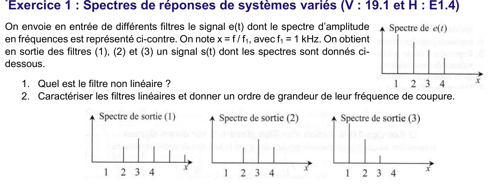
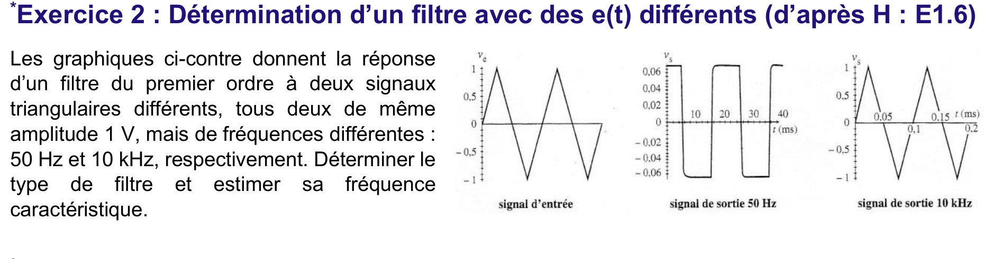
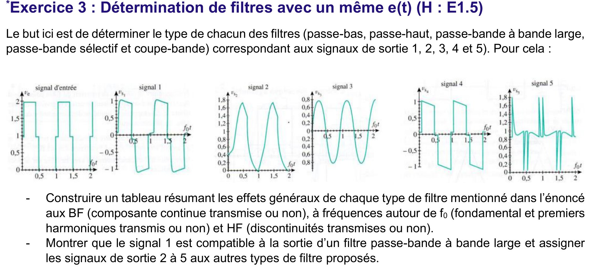
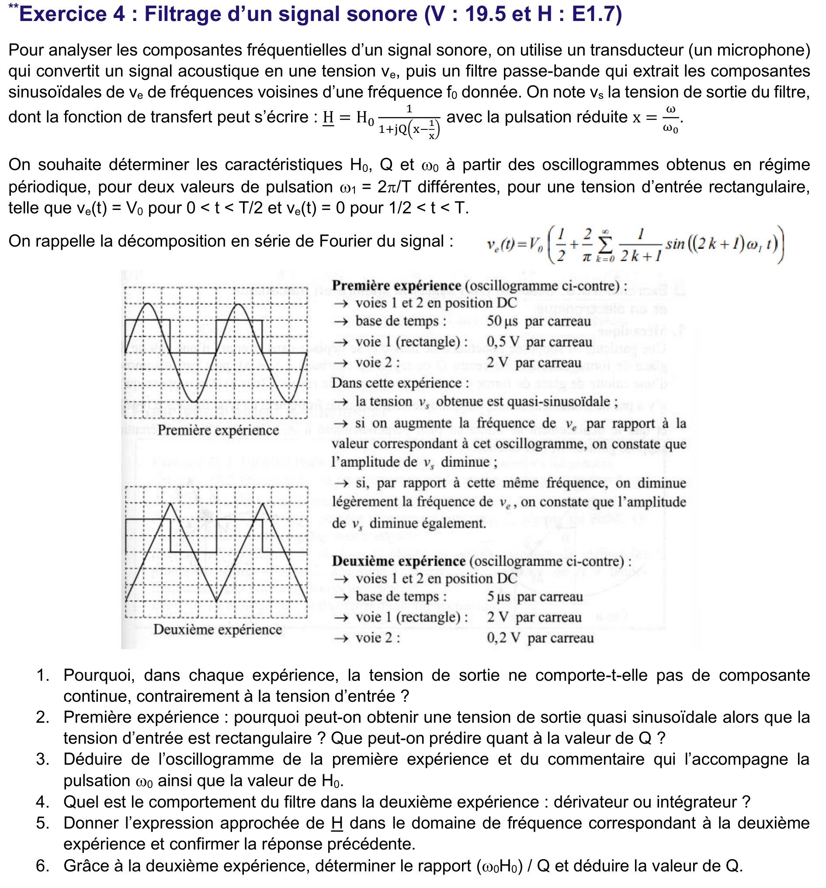
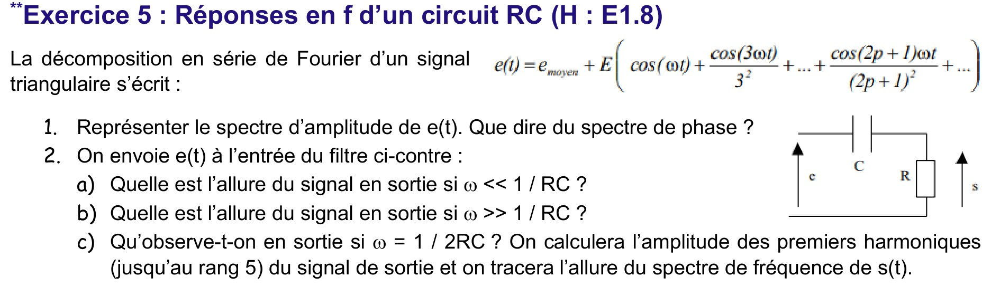

Chapitre 2 — Filtrage d'un signal périodique & stabilité des SLCI
Décomposition en série de Fourier, action d'un filtre passif sur un signal périodique (méthode par superposition), et pourquoi un filtre analogique passif est toujours stable. Cours résumé + les 2 questions du CM résolues, spectre tracé. AM2 · P2030 · Semestre 3 — D. Courtois, 08/09/2026.
1. Décomposition d'un signal périodique en série de Fourier
Tout signal \(u(t)\) périodique de fréquence \(f\) se décompose en une somme discrète de signaux harmoniques de fréquences multiples de \(f\) : c'est son développement en série de Fourier.
\[ u(t)=U_0+\sum_{n=1}^{\infty}C_n\cos(2\pi nft+\varphi_n) =U_0+\sum_{n=1}^{\infty}A_n\cos(2\pi nft)+\sum_{n=1}^{\infty}B_n\sin(2\pi nft) \]- \(U_0\) : la composante continue — la valeur moyenne du signal.
- \(n=1\) : le fondamental, de même fréquence \(f\) que le signal entier.
- \(n>1\) : les harmoniques de rang \(n\) (fréquence \(nf\)).
Spectre d'amplitude en fréquences
Il donne les amplitudes \(C_n\) des composantes en fonction de leur fréquence, sous forme d'un diagramme en bâtons : rang \(n\) (ou fréquence \(nf\)) en abscisse, \(|C_n|\) en ordonnée. Les phases \(\varphi_n\) n'y figurent pas (elles relèvent d'un spectre de phase, rarement tracé ici).
Spectres des signaux périodiques usuels
En plus d'une éventuelle composante continue \(U_0\) (signaux non symétriques) :
| Signal | Contenu harmonique | Loi des amplitudes |
|---|---|---|
| Sinusoïdal | fondamental seul | \(C_1\) seul |
| Triangulaire | harmoniques impairs | \(C_n=\dfrac{C_1}{n^2}\) |
| Créneau | harmoniques impairs | \(C_n=\dfrac{C_1}{n}\) |
2. Action d'un filtre analogique passif sur un signal périodique
- Décomposer le forçage en Fourier : \(\;e(t)=E_0+\displaystyle\sum_{n=1}^{\infty}E_n\cos(\omega_n t+\varphi_{en})\).
- Appliquer la FTH à chaque composante (même fréquence en sortie) : \[ S_n=|\underline H(\omega_n)|\,E_n\ ,\qquad \varphi_{sn}=\varphi_{en}+\arg\underline H(\omega_n). \]
- Recombiner : \(\;s(t)=S_0+\displaystyle\sum_{n=1}^{\infty}S_n\cos(\omega_n t+\varphi_{sn})\).
3. Stabilité : un filtre analogique passif est toujours stable
3.1 · Définition
La solution générale de l'ED (réponse en régime transitoire) s'écrit \(\;s(t)=s_h(t)+s_p(t)\) :
- \(s_h(t)\) : réponse en régime libre (solution de l'ED homogène, \(e(t)=0\)) ; forme fixée par l'ordre, dépend des conditions initiales.
- \(s_p(t)\) : réponse en régime forcé (solution particulière), même forme que \(e(t)\), indépendante des conditions initiales.
3.2 · Conditions de stabilité
Système du 1ᵉʳ ordre
\[ D_0 s_h+D_1\frac{ds_h}{dt}=0 \ \Longleftrightarrow\ s_h(t)=A\,e^{-D_0 t/D_1} \]\(\displaystyle\lim_{t\to\infty}s_h=0\) ssi \(\dfrac{D_0}{D_1}>0\), c.-à-d. \(D_0\) et \(D_1\) de même signe.
Système du 2ᵈ ordre
\[ D_0 s_h+D_1\frac{ds_h}{dt}+D_2\frac{d^2s_h}{dt^2}=0 \ \to\ D_2r^2+D_1r+D_0=0\ ,\quad \Delta=D_1^2-4D_0D_2 \]| Cas | \(s_h(t)\) | \(\lim_{t\to\infty}s_h=0\) ssi |
|---|---|---|
| \(\Delta>0\) | \(A e^{r_+t}+B e^{r_-t}\), \(r_\pm=\dfrac{-D_1\pm\sqrt\Delta}{2D_2}\) | \(r_++r_-=-\tfrac{D_1}{D_2}<0\) et \(r_+r_-=+\tfrac{D_0}{D_2}>0\) |
| \(\Delta=0\) | \((At+B)e^{rt}\), \(r=\dfrac{-D_1}{2D_2}\) | \(r<0\) (et \(D_1^2=4D_0D_2\)) |
| \(\Delta<0\) | \(\big[A\cos(\tfrac{\sqrt{-\Delta}}{2D_2}t)+B\sin(\cdots)\big]e^{-D_1 t/2D_2}\) | \(-\tfrac{D_1}{2D_2}<0\) et \(\tfrac{D_0}{D_2}>0\) |
Dans les trois cas, la condition revient à : \(D_2,\ D_1,\ D_0\) de même signe.
4. Questions du cours — résolues
Tracer le spectre d'amplitude d'un créneau symétrique de fréquence \(f = 100\) Hz, d'amplitude \(U_{max} = 12\) V (fondamental \(C_1 \approx 15\) V), sur la plage \([0 - 1\ \text{kHz}]\).
Spectre du créneau sur \([0 - 1\ \text{kHz}]\)
Étape 1 : ce qu'on sait du créneau symétrique
- Il est centré sur 0 : pas de composante continue, \(U_0 = 0\).
- Seuls les harmoniques impairs existent.
- Leur amplitude décroît en \(1/n\) : \(C_n = \dfrac{C_1}{n}\).
Étape 2 : le fondamental
\[ C_1 = \frac{4U_{max}}{\pi} = \frac{4\times12}{\pi} \approx 15\ \text{V} \]Étape 3 : les raies présentes sur \([0 - 1\ \text{kHz}]\)
Les raies sont aux fréquences \(n\times100\) Hz, avec \(n\) impair et \(n\times100 \le 1000\) : \(n = 1, 3, 5, 7, 9\).
| rang \(n\) | 1 | 3 | 5 | 7 | 9 |
|---|---|---|---|---|---|
| \(f=nf_0\) (Hz) | 100 | 300 | 500 | 700 | 900 |
| \(C_n=15/n\) (V) | 15 | 5 | 3 | ≈2,14 | ≈1,67 |
Le créneau de Q1 traverse un passe-bas, puis un passe-haut. Comment le spectre est-il modifié pour chaque sortie ?
Spectre de sortie d'un passe-bas et d'un passe-haut
Étape 1 : la règle
Un filtre linéaire ne peut qu'atténuer (ou amplifier) des raies existantes. Il n'en crée jamais.
Étape 2 : sortie d'un passe-bas
- \(|\underline H|\) décroît avec la fréquence.
- Le fondamental passe, les harmoniques élevés sont atténués.
- Les fronts raides sont portés par les rangs élevés : ils disparaissent, le signal est arrondi.
Étape 3 : sortie d'un passe-haut
- \(|\underline H|\) croît depuis 0.
- Le fondamental et les premiers rangs sont atténués, les harmoniques élevés ressortent.
- Il ne reste que les variations brutales : des pics aux transitions du créneau.
Les 5 exercices du TD2 corrigés un par un. Pour chacun, l'énoncé (photo) est placé juste au-dessus de sa correction détaillée pas à pas : lecture de spectres, filtre linéaire vs non linéaire, dérivateur/intégrateur, passe-bande résonant (Q, H₀, ω₀) et réponse d'un circuit RC à un signal triangulaire. AM2 · P2030 · Semestre 3 — D. Courtois.

1) Quel est le filtre non linéaire ?
Étape 1 : la règle
Ici, une sortie linéaire ne peut contenir que des raies en \(x = 1, 2, 3, 4\).
Étape 2 : on vérifie chaque sortie
- Sortie (2) : raies en \(x = 2, 3, 4\). Toutes existent dans l'entrée.
- Sortie (3) : raies en \(x = 1, 2, 3\). Toutes existent dans l'entrée.
- Sortie (1) : raies en \(x = 2, 3, 4, 5, 6\). Les raies \(x = 5\) et \(x = 6\) n'existent pas dans \(e(t)\).
2) Caractériser les filtres linéaires, ordre de grandeur de \(f_c\)
Étape 1 : la méthode
On compare raie par raie la sortie et l'entrée. Le gain à la fréquence \(x\) est le rapport des hauteurs :
\[ |\underline H(x)| = \frac{\text{hauteur de la raie de sortie}}{\text{hauteur de la raie d'entrée}} \]Étape 2 : filtre (2)
- La raie \(x = 1\) est supprimée.
- La raie \(x = 2\) est nettement atténuée.
- En \(x = 3\) et \(x = 4\), le gain est maximal et à peu près constant : la raie 4 n'est pas plus atténuée que la raie 3, alors que l'entrée décroît.
Les basses fréquences sont coupées, les hautes passent.
Étape 3 : filtre (3)
- La raie \(x = 1\) est gardée à fort niveau.
- La raie \(x = 2\) est un peu atténuée.
- La raie \(x = 3\) est très atténuée, la raie \(x = 4\) est éliminée.
Les hautes fréquences sont coupées.

- À 50 Hz : la sortie est un créneau (période 20 ms) d'amplitude environ 0,065 V.
- À 10 kHz : la sortie est un triangle d'amplitude environ 1 V.
1) Type de filtre
Étape 1 : comparer les gains
- À 50 Hz (basse fréquence) : la sortie est très atténuée, \(0{,}065\) V pour 1 V en entrée.
- À 10 kHz (haute fréquence) : la sortie recopie l'entrée, \(s \approx e\).
Le gain croît avec la fréquence : c'est un passe-haut.
Étape 2 : confirmer avec la forme du signal
Le triangle a des pentes constantes, alternativement positive et négative. Sa dérivée est donc un créneau : c'est exactement ce qu'on voit à 50 Hz.
2) Estimation de la fréquence caractéristique \(f_c=\dfrac{1}{2\pi RC}\)
Étape 1 : la pente du triangle à 50 Hz
Le triangle d'amplitude crête \(V_m = 1\) V passe de \(-1\) V à \(+1\) V, soit \(2V_m\), en une demi-période \(T/2\) :
\[ \left|\frac{de}{dt}\right| = \frac{2V_m}{T/2} = 4V_m f \] \[ \left|\frac{de}{dt}\right| = 4\times1\times50 = 200\ \text{V/s} \]Étape 2 : la constante de temps
En régime dérivateur, l'amplitude du créneau vaut \(S = RC\left|\dfrac{de}{dt}\right|\). Avec \(S \approx 0{,}065\) V :
\[ RC = \frac{0{,}065}{200} \approx 3{,}3\times10^{-4}\ \text{s} \]Étape 3 : la fréquence de coupure
\[ f_c = \frac{1}{2\pi RC} = \frac{1}{2\pi\times3{,}3\times10^{-4}} \approx 4{,}9\times10^{2}\ \text{Hz} \]Étape 4 : vérification
- 50 Hz est bien très inférieur à \(f_c\) : régime dérivateur, sortie petite.
- 10 kHz est bien très supérieur à \(f_c\) : \(|\underline H| \approx 1\), la sortie recopie l'entrée.

1) Tableau des effets généraux de chaque type de filtre
Étape 1 : décomposer l'entrée en trois zones
Le signal rectangulaire \(e(t)\) contient :
- une composante continue (très basse fréquence) : sa valeur moyenne ;
- un fondamental à \(f_0\) : l'allure générale ;
- des harmoniques élevés (hautes fréquences) : ils fabriquent les fronts raides.
Étape 2 : effet de chaque filtre sur ces zones
| Type de filtre | BF — composante continue | autour de f₀ — fondamental | HF — discontinuités (fronts) |
|---|---|---|---|
| Passe-bas | transmise | transmis | coupées (fronts arrondis) |
| Passe-haut | coupée | transmis | transmises (fronts raides) |
| Passe-bande bande large | coupée | transmis | transmises (large bande) |
| Passe-bande sélectif | coupée | transmis (seul) | coupées |
| Coupe-bande (réjecteur) | transmise | coupé | transmises |
2) Signal 1 = passe-bande à bande large, et affectation des signaux 2 à 5
Étape 1 : montrer que le signal 1 vient d'un passe-bande large
- Il oscille autour de 0 : pas de composante continue, le continu est coupé.
- Il garde des fronts raides : les hautes fréquences passent.
- Il garde une allure de créneau : le fondamental passe.
- Ses plateaux s'affaissent légèrement : les toutes basses fréquences sont perdues.
Continu coupé, fondamental et large bande d'harmoniques transmis : c'est la signature d'un passe-bande à bande large.
Étape 2 : signaux 2 à 5, avec le tableau
| Signal | Ce qu'on observe | DC | f₀ | HF | Filtre |
|---|---|---|---|---|---|
| Signal 2 | bosses arrondies, positives (0,2 à 1,8), aucun front | oui | oui | non | Passe-bas |
| Signal 3 | sinusoïde propre centrée sur 0 (±0,8) | non | oui, seul | non | Passe-bande sélectif |
| Signal 4 | créneau centré sur 0, plateaux qui s'affaissent vers 0 | non | oui | oui | Passe-haut |
| Signal 5 | ligne de base vers 1 (continu gardé) et pics étroits aux fronts | oui | non | oui | Coupe-bande |

1) Pourquoi pas de composante continue en sortie ?
Étape 1 : le module du filtre
\[ |\underline H| = \frac{H_0}{\sqrt{1 + Q^2\left(x - \frac1x\right)^2}} \]Étape 2 : en continu
Le continu correspond à \(\omega = 0\), donc \(x \to 0\). Alors \(\dfrac1x \to \infty\), le dénominateur tend vers l'infini :
\[ |\underline H(0)| = 0 \]2) 1ʳᵉ expérience : sortie quasi sinusoïdale, que prédire sur \(Q\) ?
Étape 1 : où est le fondamental ?
Augmenter ou diminuer légèrement la fréquence fait baisser l'amplitude de \(v_s\) : on est au sommet de la courbe de résonance. Donc \(\omega_1 = \omega_0\) (\(x = 1\), gain \(H_0\)).
Étape 2 : que deviennent les harmoniques ?
L'harmonique 3 est en \(x = 3\). Avec \(x - \frac1x = 3 - \frac13 \approx 2{,}67\) :
\[ |\underline H(3)| = \frac{H_0}{\sqrt{1 + (2{,}67\,Q)^2}} \approx \frac{H_0}{2{,}7\,Q} \quad\text{si } Q \text{ est grand} \]Si \(Q\) est grand, les harmoniques 3, 5, … sont fortement atténués. Il ne reste que le fondamental : une sinusoïde.
3) \(\omega_0\) et \(H_0\) (1ʳᵉ expérience)
Étape 1 : lire la période
Base de temps : 50 µs par carreau. L'oscillogramme contient 2 périodes sur 10 carreaux ; les fronts montants sont aux carreaux 0 et 5. Une période fait donc 5 carreaux :
\[ T = 5\times50\ \mu\text{s} = 250\ \mu\text{s} \]Étape 2 : lire les amplitudes
- Voie 1 (créneau, 0,5 V/carreau) : 2 carreaux de haut, donc \(V_0 = 1\) V.
- Le fondamental de \(v_e\) a donc l'amplitude \(\dfrac{2V_0}{\pi} \approx 0{,}64\) V.
- Voie 2 (2 V/carreau) : la sinusoïde monte de 3 carreaux au-dessus de l'axe, donc \(S_1 = 6\) V.
Étape 3 : le gain maximal
À la résonance, seul le fondamental passe, multiplié par \(H_0\) : \(S_1 = H_0\times\dfrac{2V_0}{\pi}\).
\[ H_0 = \frac{S_1}{2V_0/\pi} = \frac{6}{0{,}64} = 3\pi \approx 9{,}4 \]4) 2ᵉ expérience : dérivateur ou intégrateur ?
Étape 1 : où est-on par rapport à la résonance ?
Base de temps : 5 µs par carreau, une période fait 5 carreaux :
\[ T = 25\ \mu\text{s} \qquad f_1 = 40\ \text{kHz} \qquad \omega_1 = 2{,}5\times10^5\ \text{rad/s} = 10\,\omega_0 \]Donc \(x = 10\) : on est bien au-dessus de la résonance.
Étape 2 : lire la forme de la sortie
La sortie est un triangle. Elle monte quand le créneau est haut et descend quand il est bas : elle est proportionnelle à l'intégrale du créneau.
5) Expression approchée de \(\underline H\) pour \(x\gg1\)
Étape 1 : simplifier
Pour \(x \gg 1\) : \(x - \dfrac1x \approx x\), et \(Qx \gg 1\) :
\[ \underline H \approx \frac{H_0}{jQx} = \frac{H_0\,\omega_0}{Q}\times\frac{1}{j\omega} \]6) Rapport \(\dfrac{\omega_0H_0}{Q}\) puis \(Q\)
Étape 1 : lectures
- Voie 1 (2 V/carreau) : créneau de 2 carreaux, donc \(V_0 = 4\) V. Le continu est bloqué : la partie alternative vaut \(\pm V_0/2 = \pm2\) V.
- Voie 2 (0,2 V/carreau) : triangle de 6 carreaux crête à crête, donc \(\Delta v_s = 1{,}2\) V.
- Cette variation se fait en une demi-période \(T/2 = 12{,}5\ \mu\)s.
Étape 2 : la constante \(K\)
Pendant une demi-période, l'entrée alternative vaut \(+V_0/2\), constante. L'intégrateur donne une variation :
\[ \Delta v_s = K\times\frac{V_0}{2}\times\frac{T}{2} \] \[ K = \frac{\Delta v_s}{\frac{V_0}{2}\times\frac{T}{2}} = \frac{1{,}2}{2\times12{,}5\times10^{-6}} = 4{,}8\times10^{4}\ \text{s}^{-1} \]Étape 3 : le facteur de qualité
\[ Q = \frac{\omega_0 H_0}{K} = \frac{2{,}5\times10^{4}\times9{,}4}{4{,}8\times10^{4}} \approx 5 \]
1) Spectre d'amplitude de \(e(t)\) ; spectre de phase ?
Étape 1 : lire les raies dans la série
- À \(f = 0\) : le continu \(e_{moy}\).
- Aux harmoniques impairs \(f_0, 3f_0, 5f_0, \dots\) : des raies de hauteur \(E/n^2\), soit \(E,\ E/9,\ E/25,\ E/49, \dots\)
- Pas d'harmoniques pairs.
La décroissance en \(1/n^2\) est rapide : c'est typique du triangle, qui n'a pas de discontinuité.
Étape 2 : le spectre de phase
La série ne contient que des cosinus, tous avec un signe \(+\) : chaque phase vaut 0.
2) Allure de la sortie selon \(\omega\)
Étape 1 : la fonction de transfert
On multiplie en haut et en bas par \(jC\omega\) :
\[ \underline H = \frac{jRC\omega}{1 + jRC\omega} \qquad\qquad \omega_c = \frac{1}{RC} \]C'est un passe-haut du 1ᵉʳ ordre. Le continu (\(\omega = 0\)) est toujours bloqué.
Étape 2 : cas a) \(\omega \ll 1/RC\)
Tous les harmoniques sont sous la coupure : \(\underline H \approx jRC\omega\). Le filtre est dérivateur :
\[ s \approx RC\,\frac{de}{dt} \]La dérivée d'un triangle est un créneau.
Étape 3 : cas b) \(\omega \gg 1/RC\)
Tous les harmoniques sont au-dessus de la coupure : \(|\underline H| \to 1\) et la phase tend vers 0. Le filtre recopie l'entrée, sauf le continu.
Étape 4 : cas c) \(\omega = 1/(2RC)\), gain de chaque harmonique
Pour le rang \(n\), la pulsation vaut \(n\omega\), donc \(RC\,n\omega = \dfrac{n}{2}\) :
\[ |\underline H_n| = \frac{n/2}{\sqrt{1 + (n/2)^2}} \qquad\qquad S_n = |\underline H_n|\times\frac{E}{n^2} \]- \(n = 1\) : \(|\underline H_1| = \dfrac{0{,}5}{\sqrt{1{,}25}} \approx 0{,}447\), donc \(S_1 \approx 0{,}447\,E\).
- \(n = 3\) : \(|\underline H_3| = \dfrac{1{,}5}{\sqrt{3{,}25}} \approx 0{,}832\), donc \(S_3 \approx 0{,}832\times\dfrac{E}{9} \approx 0{,}0924\,E\).
- \(n = 5\) : \(|\underline H_5| = \dfrac{2{,}5}{\sqrt{7{,}25}} \approx 0{,}928\), donc \(S_5 \approx 0{,}928\times\dfrac{E}{25} \approx 0{,}0371\,E\).
| rang n | RCnω = n/2 | gain |Hₙ| | ampl. entrée | ampl. sortie Sₙ |
|---|---|---|---|---|
| 0 (DC) | 0 | 0 | e_moy | 0 (bloqué) |
| 1 | 0,5 | 0,447 | E | 0,447 E |
| 3 | 1,5 | 0,832 | E/9 | 0,0924 E |
| 5 | 2,5 | 0,928 | E/25 | 0,0371 E |